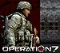

De: La Frikipedia, la enciclopedia extremadamente seria.
De: La Frikipedia, la enciclopedia extremadamente seria. De: La Frikipedia, la enciclopedia extremadamente seria.
|  | Este usuario juega Operation 7 |
Para usar esta plantilla no copies el código, simplemente escribe {{Frikibox/Operation7}}.
Autor(es):